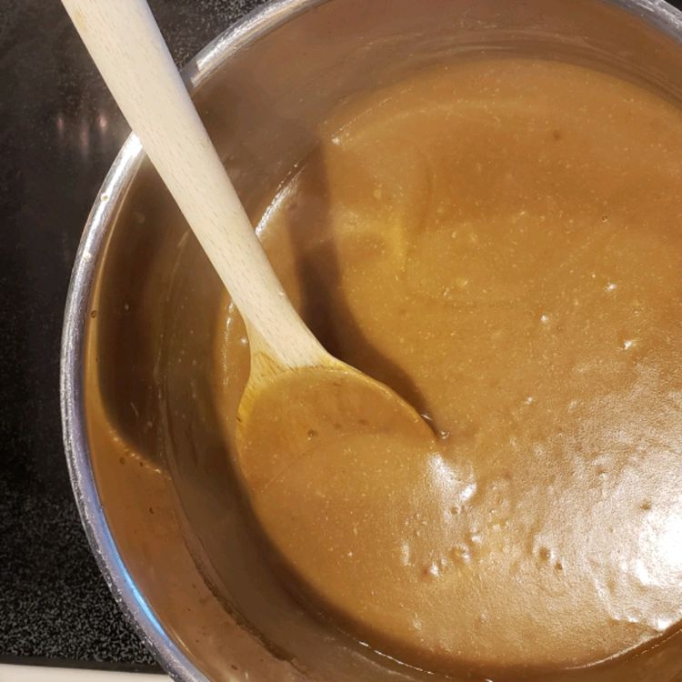

Home
Vegetarian Gravy

Description
A delicious vegetarian gravy made with onions, garlic, vegetable broth, and nutritional yeast.
Ingredients
- ½ cup vegetable oil
- ⅓ cup chopped onion
- 5 cloves garlic, minced
- ½ cup all-purpose flour
- 4 teaspoons nutritional yeast
- 4 tablespoons light soy sauce or to taste
- 2 cups vegetable broth
- ½ teaspoon dried sage
- ½ teaspoon salt or to taste
- ¼ teaspoon ground black pepper
- Heat oil in a medium saucepan over medium heat; stir in onion and garlic. Cook and stir until onion has softened and turned translucent, about 5 minutes.
- Stir in flour, nutritional yeast, and soy sauce to form a smooth paste.
- Gradually whisk in broth.
- Season with sage, salt, and pepper.
- Bring to a boil.
- Reduce heat, and simmer, stirring constantly, for 8 to 10 minutes, or until thickened.